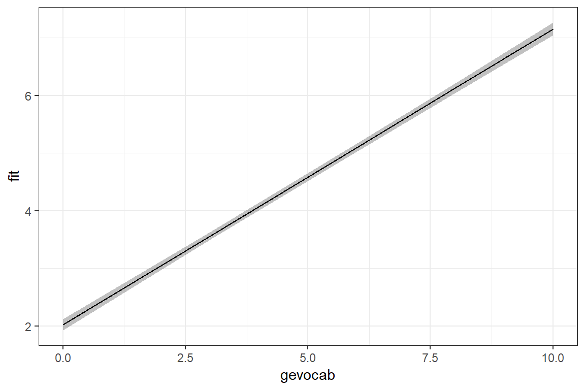
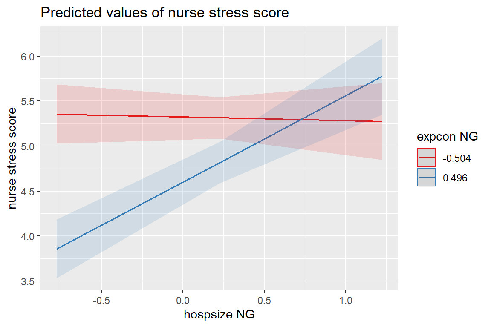
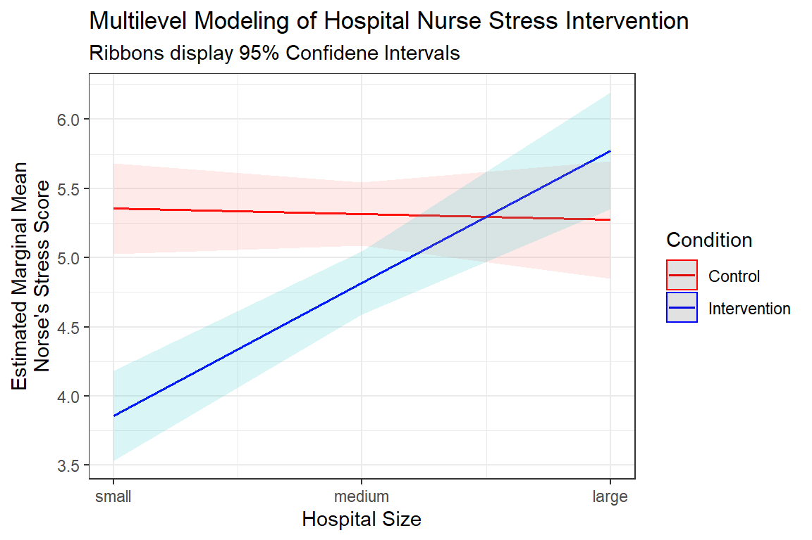
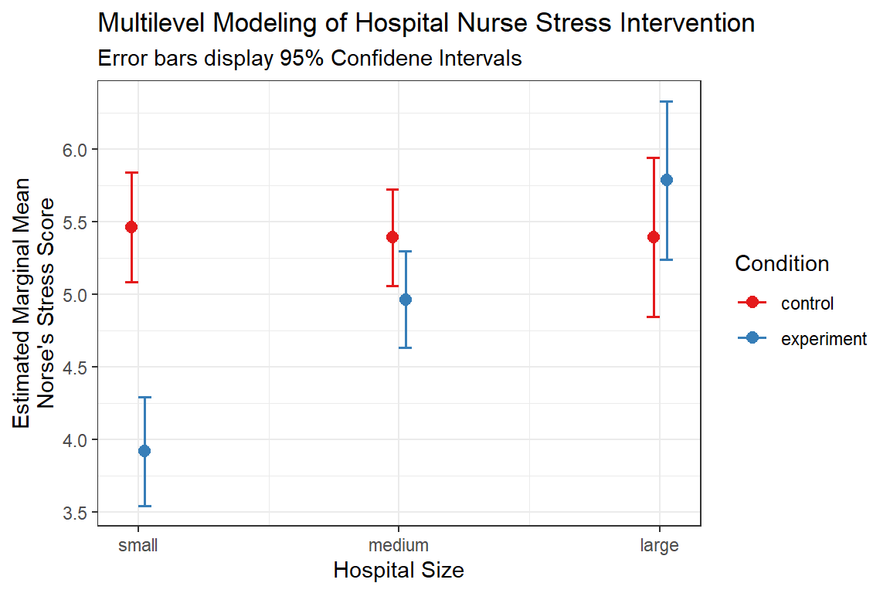

3 MLM, 3 levels: Nurse’s Stress Intervention

library(tidyverse) # basically everything ;)
library(haven) # read in SPSS dataset
library(furniture) # nice table1() descriptives
library(stargazer) # display nice tables: summary & regression
library(texreg) # Convert Regression Output to LaTeX or HTML Tables
library(psych) # contains some useful functions, like headTail
library(car) # Companion to Applied Regression
library(lme4) # Linear, generalized linear, & nonlinear mixed models
library(lmerTest) # Tests on lmer objects
library(performance) # ICC calculations
library(interactions) # plotting interactions
library(effects) # Effects for regression models
library(optimx) # Different optimizers to solve mlm's3.1 Background
The text “Multilevel Analysis: Techniques and Applications, Third Edition” (Hox, Moerbeek, and Van de Schoot 2017) has a companion website which includes links to all the data files used throughout the book (housed on the book’s GitHub repository).
The following example is used through out Hox, Moerbeek, and Van de Schoot (2017)’s chapater 2.
From Appendix E:
The nurses.sav file contains three-level simulated data from a hypothetical study on stress in hospitals. The data are from nurses working in wards nested within hospitals. It is a cluster-randomized experiment. In each of 25 hospitals, four wards are selected and randomly assigned to an experimental and a control condition. In the experimental condition, a training program is offered to all nurses to cope with job-related stress. After the program is completed, a sample of about 10 nurses from each ward is given a test that measures job-related stress. Additional variables (covariates) are: nurse age (years), nurse experience (years), nurse gender (0=male, 1 = female), type of ward (0=general care, 1=special care), and hospital size (0=small, 1 = medium, 2=large). The data have been generated to illustrate three-level analysis with a random slope for the effect of the intervention.

Here the data is read in and the SPSS variables with labels are converted to \(R\) factors.
data_raw <- haven::read_sav("https://github.com/MultiLevelAnalysis/Datasets-third-edition-Multilevel-book/raw/master/chapter%202/Nurses/SPSS/Nurses.sav") %>%
haven::as_factor() # retain the labels from SPSS --> factor3.1.1 Unique Identifiers
All standardized (starts with “Z”) and mean centered (starts with “C”) variables will be remove so that their creation may be shown later. A new indicator varible for nurses with be created by combining the hospital, ward, and nurse indicators. Having a unique, distinct identifier variable for each of the units on lower (Level 1 and 2) levels is helpful for multilevel anlayses.
data_nurse <- data_raw %>%
dplyr::mutate(genderF = factor(gender,
labels = c("Male", "Female"))) %>% # apply factor labels
dplyr::mutate(id = paste(hospital, ward, nurse,
sep = "_") %>% # cunique id for each student
factor()) %>% # declare id is a factor
dplyr::mutate_at(vars(hospital, ward,
wardid, nurse), factor) %>% # declare to be factors
dplyr::mutate(age = age %>% as.character %>% as.numeric) %>% # declare to be numeric
dplyr::select(id, wardid, nurse, ward, hospital,
age, gender, genderF, experien,
wardtype, hospsize,
expcon, stress) # reduce variables included
tibble::glimpse(data_nurse)Rows: 1,000
Columns: 13
$ id <fct> 1_1_1, 1_1_2, 1_1_3, 1_1_4, 1_1_5, 1_1_6, 1_1_7, 1_1_8, 1_...
$ wardid <fct> 11, 11, 11, 11, 11, 11, 11, 11, 11, 12, 12, 12, 12, 12, 12...
$ nurse <fct> 1, 2, 3, 4, 5, 6, 7, 8, 9, 10, 11, 12, 13, 14, 15, 16, 17,...
$ ward <fct> 1, 1, 1, 1, 1, 1, 1, 1, 1, 2, 2, 2, 2, 2, 2, 2, 2, 2, 3, 3...
$ hospital <fct> 1, 1, 1, 1, 1, 1, 1, 1, 1, 1, 1, 1, 1, 1, 1, 1, 1, 1, 1, 1...
$ age <dbl> 36, 45, 32, 57, 46, 60, 23, 32, 60, 45, 57, 47, 32, 42, 42...
$ gender <dbl> 0, 0, 0, 1, 1, 1, 1, 1, 0, 0, 1, 0, 1, 1, 1, 1, 0, 1, 1, 0...
$ genderF <fct> Male, Male, Male, Female, Female, Female, Female, Female, ...
$ experien <dbl> 11, 20, 7, 25, 22, 22, 13, 13, 17, 21, 24, 24, 14, 13, 17,...
$ wardtype <fct> general care, general care, general care, general care, ge...
$ hospsize <fct> large, large, large, large, large, large, large, large, la...
$ expcon <fct> experiment, experiment, experiment, experiment, experiment...
$ stress <dbl> 7, 7, 7, 6, 6, 6, 6, 7, 7, 6, 6, 6, 6, 6, 6, 5, 5, 6, 5, 5...3.1.2 Centering Variables
When variables are involved in an interaction, it may be advantageous to center the variables. Hox, Moerbeek, and Van de Schoot (2017) covers this in chapter 4.
To center categorical variables:
1. Convert then to integers, starting with zero: \(0, 1, \dots\)
2. Subtract the mean
data_nurse %>%
dplyr::mutate(expconN = as.numeric(expcon) - 1) %>% # Numeric Version of experimental condition
dplyr::mutate(hospsizeN = as.numeric(hospsize) - 1) %>% # Numeric Version of hospital size
dplyr::select(expcon, expconN, hospsize, hospsizeN) %>%
summary() expcon expconN hospsize hospsizeN
control :496 Min. :0.000 small :374 Min. :0.000
experiment:504 1st Qu.:0.000 medium:476 1st Qu.:0.000
Median :1.000 large :150 Median :1.000
Mean :0.504 Mean :0.776
3rd Qu.:1.000 3rd Qu.:1.000
Max. :1.000 Max. :2.000 data_nurse <- data_nurse %>%
dplyr::mutate(expconN = as.numeric(expcon) - 1) %>% # Numeric Version of experimental condition
dplyr::mutate(hospsizeN = as.numeric(hospsize) - 1) %>% # Numeric Version of hospital size
dplyr::mutate(expconNG = expconN - 0.504) %>% # Grand-Mean Centered version of experimental condition
dplyr::mutate(hospsizeNG = hospsizeN - 0.776) # Grand-Mean Centered version of ehospital size expconNG
expcon -0.504 0.496
control 496 0
experiment 0 504 hospsizeNG
hospsize -0.776 0.224 1.224
small 374 0 0
medium 0 476 0
large 0 0 1503.2 Exploratory Data Analysis
3.2.1 Summarize Descriptive Statistics
3.2.1.1 The stargazer package
Most posters, journal articles, and reports start with a table of descriptive statistics. Since it tends to come first, this type of table is often refered to as Table 1. The stargazer() function can be used to create such a table, but only for the entire dataset (Hlavac 2018). I haven’t been able to find a way to get it to summarize subsamples and compare them in the standard format.
# Knit to Website: type = "html"
# Knit to PDF: type = "latex"
# View on Screen: type = "text"
data_nurse %>%
data.frame() %>%
stargazer::stargazer(title = "Descriptive statistics, aggregate over entire sample",
header = FALSE,
type = "text")| Statistic | N | Mean | St. Dev. | Min | Pctl(25) | Pctl(75) | Max |
| age | 1,000 | 43.005 | 12.042 | 23 | 33 | 53 | 64 |
| gender | 1,000 | 0.735 | 0.442 | 0 | 0 | 1 | 1 |
| experien | 1,000 | 17.057 | 6.042 | 1 | 13 | 21 | 38 |
| stress | 1,000 | 4.977 | 0.980 | 1 | 4 | 6 | 7 |
| expconN | 1,000 | 0.504 | 0.500 | 0 | 0 | 1 | 1 |
| hospsizeN | 1,000 | 0.776 | 0.689 | 0 | 0 | 1 | 2 |
| expconNG | 1,000 | -0.000 | 0.500 | -0.504 | -0.504 | 0.496 | 0.496 |
| hospsizeNG | 1,000 | -0.000 | 0.689 | -0.776 | -0.776 | 0.224 | 1.224 |
3.2.1.2 The furniture package
Tyson Barrett’s furniture package includes the extremely useful function table1() which simplifies the common task of creating a stratified, comparative table of descriptive statistics. Full documentation can be accessed by executing ?furniture::table1.
# Knit to Website: output = "html"
# Knit to PDF: output = "latex2"
# View on Screen: output = ""text", or "markdown", "html"
data_nurse %>%
furniture::table1(age, genderF, experien, wardtype, hospsize, hospsizeN, hospsizeNG,
splitby = ~ expcon, # var to divide sample by
test = TRUE, # test groups different?
type = "full", # give the test statistic
output = "text", # output for html
caption = "Compare Intervention groups on five main variables") # title| control | experiment | Test | P-Value | |
|---|---|---|---|---|
| n = 496 | n = 504 | |||
| age | T-Test: 0.82 | 0.411 | ||
| 43.3 (11.6) | 42.7 (12.5) | |||
| genderF | Chi Square: 0.19 | 0.661 | ||
| Male | 135 (27.2%) | 130 (25.8%) | ||
| Female | 361 (72.8%) | 374 (74.2%) | ||
| experien | T-Test: 0.69 | 0.492 | ||
| 17.2 (5.8) | 16.9 (6.3) | |||
| wardtype | Chi Square: 0 | 1 | ||
| general care | 247 (49.8%) | 252 (50%) | ||
| special care | 249 (50.2%) | 252 (50%) | ||
| hospsize | Chi Square: 0.01 | 0.993 | ||
| small | 185 (37.3%) | 189 (37.5%) | ||
| medium | 237 (47.8%) | 239 (47.4%) | ||
| large | 74 (14.9%) | 76 (15.1%) | ||
| hospsizeN | T-Test: 0.01 | 0.992 | ||
| 0.8 (0.7) | 0.8 (0.7) | |||
| hospsizeNG | T-Test: 0.01 | 0.992 | ||
| 0.0 (0.7) | -0.0 (0.7) |
The t-test performed by the furniture::table1() function will always assume indepent groups and that HOV is not violated. This may or may not be appropriate.
3.3 MLM: Null Model
In a Null, intercept-only, or Empty model, no predictors are included.
3.3.0.1 Fit the Model
Fit the model to the data, with both ML and REML.
nurse_lmer_0_re <- lmerTest::lmer(stress ~ 1 + # Fixed Intercept for all nurses
(1|hospital/ward), # Random Intercepts for wards within hospitals
data = data_nurse,
REML = TRUE) # fit via REML (the default) for ICC calculations
nurse_lmer_0_ml <- lmerTest::lmer(stress ~ 1 + # Fixed Intercept for all nurses
(1|hospital/ward), # Random Intercepts for wards within hospitals
data = data_nurse,
REML = FALSE) # fit via ML for comparing FIXED effects inclusion# Knit to Website: texreg::htmlreg()
# Knit to PDF: texreg::texreg()
# View on Screen: texreg::screenreg()
texreg::screenreg(list(nurse_lmer_0_ml,
nurse_lmer_0_re),
custom.model.names = c("M0: Null, ML",
"M0: Null, REML"),
caption = "NULL Model: different estimation methods",
caption.above = TRUE,
single.row = TRUE)| M0: Null, ML | M0: Null, REML | |
|---|---|---|
| (Intercept) | 5.00 (0.11)*** | 5.00 (0.11)*** |
| AIC | 1950.36 | 1952.95 |
| BIC | 1969.99 | 1972.58 |
| Log Likelihood | -971.18 | -972.48 |
| Num. obs. | 1000 | 1000 |
| Num. groups: ward:hospital | 100 | 100 |
| Num. groups: hospital | 25 | 25 |
| Var: ward:hospital (Intercept) | 0.49 | 0.49 |
| Var: hospital (Intercept) | 0.16 | 0.17 |
| Var: Residual | 0.30 | 0.30 |
| p < 0.001; p < 0.01; p < 0.05 | ||
3.4 Estimate the ICC
The ICC is calculated by dividing the between-group-variance (random intercept variance) by the total variance (i.e. sum of between-group-variance and within-group (residual) variance).
Groups Name Std.Dev.
ward:hospital (Intercept) 0.69916
hospital (Intercept) 0.41749
Residual 0.54887 Groups Name Variance Std.Dev.
ward:hospital (Intercept) 0.489 0.699
hospital (Intercept) 0.174 0.417
Residual 0.301 0.549 
The performance package has a few really helpful funcitons:
Groups Name Std.Dev.
ward:hospital (Intercept) 0.69916
hospital (Intercept) 0.41749
Residual 0.54887 $var.fixed
[1] 0
$var.random
[1] 0.6631239
$var.residual
[1] 0.3012569
$var.distribution
[1] 0.3012569
$var.dispersion
[1] 0
$var.intercept
ward:hospital hospital
0.4888231 0.1743008 \[ \begin{align*} \text{hospitals} \rightarrow \; & \sigma^2_{v0} = 0.417^2 = 0.174\\ \text{wards within hospitals} \rightarrow \; & \sigma^2_{u0} = 0.699^2 = 0.489\\ \text{nurses within wards within hospitals} \rightarrow \; & \sigma^2_{e} = 0.549^2 = 0.301\\ \end{align*} \]
Intraclass Correlation (ICC) Formula, 3 level model - Davis and Scott Method \[ \overbrace{\rho_{mid}}^{\text{ICC}\atop\text{at level 2}} = \frac{\overbrace{\sigma^2_{u0}}^{\text{Random Intercept}\atop\text{Variance Level 2}}} {\underbrace{\sigma^2_{v0}+\sigma^2_{u0}+\sigma^2_{e}}_{\text{Total}\atop\text{Variance}}} \tag{Hox 2.16} \] \[ \overbrace{\rho_{top}}^{\text{ICC}\atop\text{ at level 3}} = \frac{\overbrace{\sigma^2_{u0}}^{\text{Random Intercept}\atop\text{Variance Level 3}}} {\underbrace{\sigma^2_{v0}+\sigma^2_{u0}+\sigma^2_{e}}_{\text{Total}\atop\text{Variance}}} \tag{Hox 2.17} \]
[1] 0.5072614[1] 0.1804979For more than two levels, the ‘performance::icc()’ function computes ICC’s by the Davis and Scott method.
# Intraclass Correlation Coefficient
Adjusted ICC: 0.688
Conditional ICC: 0.688# ICC by Group
Group | ICC
---------------------
ward:hospital | 0.507
hospital | 0.181The proportion of variance in nurse stress level is 0.51 at the ward level and 0.18 at the hospital level, for a total of 0.69.
To test if the three level model is justified statistically, compare the null models with and without the nesting of wards in hospitals.
nurse_lmer_0_re_2level <- lmerTest::lmer(stress ~ 1 + (1|wardid), # each hospital contains several wards
data = data_nurse,
REML = TRUE) # fit via REML (the default) for ICC calculations# Knit to Website: texreg::htmlreg()
# Knit to PDF: texreg::texreg()
# View on Screen: texreg::screenreg()
texreg::screenreg(list(nurse_lmer_0_re_2level,
nurse_lmer_0_re),
custom.model.names = c("2 levels",
"3 levels"),
caption = "MLM: Two or Three Levels?",
caption.above = TRUE,
single.row = TRUE)| 2 levels | 3 levels | |
|---|---|---|
| (Intercept) | 5.00 (0.08)*** | 5.00 (0.11)*** |
| AIC | 1958.43 | 1952.95 |
| BIC | 1973.15 | 1972.58 |
| Log Likelihood | -976.21 | -972.48 |
| Num. obs. | 1000 | 1000 |
| Num. groups: wardid | 100 | |
| Var: wardid (Intercept) | 0.66 | |
| Var: Residual | 0.30 | 0.30 |
| Num. groups: ward:hospital | 100 | |
| Num. groups: hospital | 25 | |
| Var: ward:hospital (Intercept) | 0.49 | |
| Var: hospital (Intercept) | 0.17 | |
| p < 0.001; p < 0.01; p < 0.05 | ||
The deviance test or likelihood-ratio test shows that the inclusion of the nesting of wards within hospitals better explains the variance in nurse stress levels.
Data: data_nurse
Models:
nurse_lmer_0_re_2level: stress ~ 1 + (1 | wardid)
nurse_lmer_0_re: stress ~ 1 + (1 | hospital/ward)
npar AIC BIC logLik deviance Chisq Df Pr(>Chisq)
nurse_lmer_0_re_2level 3 1958.4 1973.2 -976.21 1952.4
nurse_lmer_0_re 4 1953.0 1972.6 -972.48 1945.0 7.4738 1 0.00626
nurse_lmer_0_re_2level
nurse_lmer_0_re **
---
Signif. codes: 0 '***' 0.001 '**' 0.01 '*' 0.05 '.' 0.1 ' ' 13.5 MLM: Add Fixed Effects
3.5.1 Fit the Model
Hox, Moerbeek, and Van de Schoot (2017), page 22:
“In this example, the variable
expconis of main interest, and the other variables are covariates. Their funciton is to control for differences between the groups, which can occur even if randomization is used, especially with small samples, and to explain variance in the outcome variable stress. To the extent that these variables successfully explain the variance, the power of the test for the effect ofexpconwill be increased.”
nurse_lmer_1_ml <- lmerTest::lmer(stress ~ expcon + # experimental condition = CATEGORICAL FACTOR
age + gender + experien + # level 1 covariates
wardtype + # level 2 covariates
hospsize + # level 3 covariates, hospital size = CATEGORICAL FACTOR
(1|hospital/ward), # Random Intercepts for wards within hospitals
data = data_nurse,
REML = FALSE) # fit via ML for nested FIXED effects# Knit to Website: texreg::htmlreg()
# Knit to PDF: texreg::texreg()
# View on Screen: texreg::screenreg()
texreg::screenreg(list(nurse_lmer_0_ml,
nurse_lmer_1_ml),
custom.model.names = c("M0: null",
"M1: fixed pred"),
caption = "Nested Models: Fixed effects via ML",
caption.above = TRUE,
single.row = TRUE)| M0: null | M1: fixed pred | |
|---|---|---|
| (Intercept) | 5.00 (0.11)*** | 5.38 (0.18)*** |
| expconexperiment | -0.70 (0.12)*** | |
| age | 0.02 (0.00)*** | |
| gender | -0.45 (0.03)*** | |
| experien | -0.06 (0.00)*** | |
| wardtypespecial care | 0.05 (0.12) | |
| hospsizemedium | 0.49 (0.19)** | |
| hospsizelarge | 0.90 (0.26)*** | |
| AIC | 1950.36 | 1626.32 |
| BIC | 1969.99 | 1680.30 |
| Log Likelihood | -971.18 | -802.16 |
| Num. obs. | 1000 | 1000 |
| Num. groups: ward:hospital | 100 | 100 |
| Num. groups: hospital | 25 | 25 |
| Var: ward:hospital (Intercept) | 0.49 | 0.33 |
| Var: hospital (Intercept) | 0.16 | 0.10 |
| Var: Residual | 0.30 | 0.22 |
| p < 0.001; p < 0.01; p < 0.05 | ||
3.5.2 Assess Significance
Data: data_nurse
Models:
nurse_lmer_0_ml: stress ~ 1 + (1 | hospital/ward)
nurse_lmer_1_ml: stress ~ expcon + age + gender + experien + wardtype + hospsize +
nurse_lmer_1_ml: (1 | hospital/ward)
npar AIC BIC logLik deviance Chisq Df Pr(>Chisq)
nurse_lmer_0_ml 4 1950.4 1970.0 -971.18 1942.4
nurse_lmer_1_ml 11 1626.3 1680.3 -802.16 1604.3 338.04 7 < 2.2e-16 ***
---
Signif. codes: 0 '***' 0.001 '**' 0.01 '*' 0.05 '.' 0.1 ' ' 1It is clear that the inclusing of these fixed, main effects improves the model’s fit, but it is questionable that the type of ward is significant (Wald test is non-significant). Rather than test it directly, we will leave it in the model. This is common practice to show that an expected variable is not significant.
3.5.3 Centering Variables
Because we will will find that the experimental condition is moderated by hospital size (in other words there is a significant interaction between expcon and hospsize), Hox, Moerbeek, and Van de Schoot (2017) presents the models fit with centered values for these two variables. Let us see how this changes the model.
(1) Experimental Condition
Experimental conditon is a BINARY or two-level factor.
When it is alternatively coded as a numeric, continuous variable taking the values of zero (\(0\)) for the reference category and one (\(1\)) for the other category, the model estimates are exactly the same, including the paramters for the variables and the intercept, AND the model fit statistics.
When the numeric, continuous variable is further grand-mean centered by additionally subtraction the MEAN of the numberic version, the value of the intercept is the only estimate that changes.
nurse_lmer_1a_ml <- lmerTest::lmer(stress ~ expconN + # experimental condition = CONTINUOUS CODED 0/1
age + gender + experien +
wardtype +
hospsize + # hospital size = CATEGORICAL FACTOR
(1|hospital/ward),
data = data_nurse,
REML = FALSE)
nurse_lmer_1b_ml <- lmerTest::lmer(stress ~ expconNG + # experimental condition = CONTINUOUS GRAND-MEAN CENTERED
age + gender + experien +
wardtype +
hospsize + # hospital size = CATEGORICAL FACTOR
(1|hospital/ward),
data = data_nurse,
REML = FALSE) # Knit to Website: texreg::htmlreg()
# Knit to PDF: texreg::texreg()
# View on Screen: texreg::screenreg()
texreg::screenreg(list(nurse_lmer_1_ml,
nurse_lmer_1a_ml,
nurse_lmer_1b_ml),
custom.model.names = c("Factor",
"0 vs 1",
"Centered"),
caption = "MLM: Model 1 - Expereimental Condiditon Coding (2-levels)",
caption.above = TRUE,
single.row = TRUE)texreg::htmlreg(list(nurse_lmer_1_ml,
nurse_lmer_1a_ml,
nurse_lmer_1b_ml),
custom.model.names = c("Factor",
"0 vs 1",
"Centered"),
caption = "MLM: Model 1 - Expereimental Condiditon Coding (2-levels)",
caption.above = TRUE,
single.row = TRUE)| Factor | 0 vs 1 | Centered | |
|---|---|---|---|
| (Intercept) | 5.38 (0.18)*** | 5.38 (0.18)*** | 5.03 (0.17)*** |
| expconexperiment | -0.70 (0.12)*** | ||
| age | 0.02 (0.00)*** | 0.02 (0.00)*** | 0.02 (0.00)*** |
| gender | -0.45 (0.03)*** | -0.45 (0.03)*** | -0.45 (0.03)*** |
| experien | -0.06 (0.00)*** | -0.06 (0.00)*** | -0.06 (0.00)*** |
| wardtypespecial care | 0.05 (0.12) | 0.05 (0.12) | 0.05 (0.12) |
| hospsizemedium | 0.49 (0.19)** | 0.49 (0.19)** | 0.49 (0.19)** |
| hospsizelarge | 0.90 (0.26)*** | 0.90 (0.26)*** | 0.90 (0.26)*** |
| expconN | -0.70 (0.12)*** | ||
| expconNG | -0.70 (0.12)*** | ||
| AIC | 1626.32 | 1626.32 | 1626.32 |
| BIC | 1680.30 | 1680.30 | 1680.30 |
| Log Likelihood | -802.16 | -802.16 | -802.16 |
| Num. obs. | 1000 | 1000 | 1000 |
| Num. groups: ward:hospital | 100 | 100 | 100 |
| Num. groups: hospital | 25 | 25 | 25 |
| Var: ward:hospital (Intercept) | 0.33 | 0.33 | 0.33 |
| Var: hospital (Intercept) | 0.10 | 0.10 | 0.10 |
| Var: Residual | 0.22 | 0.22 | 0.22 |
| p < 0.001; p < 0.01; p < 0.05 | |||
(2) Hospital Size
Experimental conditon is a three-level factor.
When it is alternatively coded as a numeric, continuous variables taking the values of whole numbers, starting with zero (\(0, 1, 2, \dots\)), the model there will only be ONE parameter estimated instead of several (one less than the number of categories). This is becuase the levels are treated as being equally different from each other in terms of the outcome. This treats the effect of the categorical variable as if it is linear, which may or may not be appropriate. User beware!
When the numeric, continuous variable is further grand-mean centered by additionally subtraction the MEAN of the numberic version, the value of the intercept is the only estimate that changes.
nurse_lmer_1c_ml <- lmerTest::lmer(stress ~ expconNG + # experimental condition = CONTINUOUS GRAND-MEAN CENTERED
age + gender + experien +
wardtype +
hospsizeN + # hospital size = CONTINUOUS CODED 0/1
(1|hospital/ward),
data = data_nurse,
REML = FALSE)
nurse_lmer_1d_ml <- lmerTest::lmer(stress ~ expconNG + # experimental condition = CONTINUOUS GRAND-MEAN CENTERED
age + gender + experien +
wardtype +
hospsizeNG + # hospital size = CONTINUOUS GRAND-MEAN CENTERED
(1|hospital/ward),
data = data_nurse,
REML = FALSE)# Knit to Website: texreg::htmlreg()
# Knit to PDF: texreg::texreg()
# View on Screen: texreg::screenreg()
texreg::screenreg(list(nurse_lmer_1b_ml,
nurse_lmer_1c_ml,
nurse_lmer_1d_ml),
custom.model.names = c("Factor",
"0 vs 1",
"Centered"),
caption = "MLM: Model 1 - Hospital Coding (3-levels)",
caption.above = TRUE,
single.row = TRUE)| Factor | 0 vs 1 | Centered | |
|---|---|---|---|
| (Intercept) | 5.03 (0.17)*** | 5.04 (0.16)*** | 5.40 (0.12)*** |
| expconNG | -0.70 (0.12)*** | -0.70 (0.12)*** | -0.70 (0.12)*** |
| age | 0.02 (0.00)*** | 0.02 (0.00)*** | 0.02 (0.00)*** |
| gender | -0.45 (0.03)*** | -0.45 (0.03)*** | -0.45 (0.03)*** |
| experien | -0.06 (0.00)*** | -0.06 (0.00)*** | -0.06 (0.00)*** |
| wardtypespecial care | 0.05 (0.12) | 0.05 (0.12) | 0.05 (0.12) |
| hospsizemedium | 0.49 (0.19)** | ||
| hospsizelarge | 0.90 (0.26)*** | ||
| hospsizeN | 0.46 (0.12)*** | ||
| hospsizeNG | 0.46 (0.12)*** | ||
| AIC | 1626.32 | 1624.36 | 1624.36 |
| BIC | 1680.30 | 1673.44 | 1673.44 |
| Log Likelihood | -802.16 | -802.18 | -802.18 |
| Num. obs. | 1000 | 1000 | 1000 |
| Num. groups: ward:hospital | 100 | 100 | 100 |
| Num. groups: hospital | 25 | 25 | 25 |
| Var: ward:hospital (Intercept) | 0.33 | 0.33 | 0.33 |
| Var: hospital (Intercept) | 0.10 | 0.10 | 0.10 |
| Var: Residual | 0.22 | 0.22 | 0.22 |
| p < 0.001; p < 0.01; p < 0.05 | |||
3.6 MLM: Add Random Slope
Hox, Moerbeek, and Van de Schoot (2017), page 22:
“Although logically we can test if explanatory variables at the first level have random coefficients (slopes) at the second or third level, and if explanatory variables at teh second level have random coefficients (slopes) at the third level, these possibilities are not pursued. We DO test a model with a random coefficient (slope) for
expconat the third level, where there turns out to be significant slope variation.”
3.6.1 Fit the Model
nurse_lmer_1d_re <- lmerTest::lmer(stress ~ expconNG + # experimental condition = CONTINUOUS GRAND-MEAN CENTERED
age + gender + experien + # level 1 covariates
wardtype + # level 2 covariate
hospsizeNG + # level 3 covariate, hospital size = CONTINUOUS GRAND-MEAN CENTERED
(1|hospital/ward), # Random Intercepts for wards within hospitals
data = data_nurse,
REML = TRUE) # fit via REML for nested Random Effects
nurse_lmer_2_re <- lmerTest::lmer(stress ~ expconNG + # experimental condition = CONTINUOUS GRAND-MEAN CENTERED
age + gender + experien + # level 1 covariates
wardtype + # level 2 covariate
hospsizeNG + # level 3 covariate, hospital size = CONTINUOUS GRAND-MEAN CENTERED
(1|hospital/ward) + # Random Intercepts for wards within hospitals
(0 + expconNG|hospital), # RANDOM SLOPES for exp cond within hospital (does not vary witin a ward!)
data = data_nurse,
REML = TRUE) # fit via REML for nested Random Effects# Knit to Website: texreg::htmlreg()
# Knit to PDF: texreg::texreg()
# View on Screen: texreg::screenreg()
texreg::screenreg(list(nurse_lmer_1d_re,
nurse_lmer_2_re),
custom.model.names = c("M1: RI",
"M2: RIAS"),
caption = "Nested Models: Random Slope via REML",
caption.above = TRUE,
single.row = TRUE)| M1: RI | M2: RIAS | |
|---|---|---|
| (Intercept) | 5.40 (0.12)*** | 5.39 (0.11)*** |
| expconNG | -0.70 (0.12)*** | -0.70 (0.18)*** |
| age | 0.02 (0.00)*** | 0.02 (0.00)*** |
| gender | -0.45 (0.03)*** | -0.45 (0.03)*** |
| experien | -0.06 (0.00)*** | -0.06 (0.00)*** |
| wardtypespecial care | 0.05 (0.12) | 0.05 (0.07) |
| hospsizeNG | 0.46 (0.13)*** | 0.46 (0.13)*** |
| AIC | 1659.89 | 1633.18 |
| BIC | 1708.97 | 1687.17 |
| Log Likelihood | -819.94 | -805.59 |
| Num. obs. | 1000 | 1000 |
| Num. groups: ward:hospital | 100 | 100 |
| Num. groups: hospital | 25 | 25 |
| Var: ward:hospital (Intercept) | 0.34 | |
| Var: hospital (Intercept) | 0.11 | 0.17 |
| Var: Residual | 0.22 | 0.22 |
| Var: ward.hospital (Intercept) | 0.11 | |
| Var: hospital.1 expconNG | 0.69 | |
| p < 0.001; p < 0.01; p < 0.05 | ||
3.6.2 Assess Significance
Data: data_nurse
Models:
nurse_lmer_1d_re: stress ~ expconNG + age + gender + experien + wardtype + hospsizeNG +
nurse_lmer_1d_re: (1 | hospital/ward)
nurse_lmer_2_re: stress ~ expconNG + age + gender + experien + wardtype + hospsizeNG +
nurse_lmer_2_re: (1 | hospital/ward) + (0 + expconNG | hospital)
npar AIC BIC logLik deviance Chisq Df Pr(>Chisq)
nurse_lmer_1d_re 10 1659.9 1709.0 -819.94 1639.9
nurse_lmer_2_re 11 1633.2 1687.2 -805.59 1611.2 28.708 1 8.417e-08 ***
---
Signif. codes: 0 '***' 0.001 '**' 0.01 '*' 0.05 '.' 0.1 ' ' 1The inclusion of a random slope effect for the experimental condition expcon significantly improves the models’s fit, thus is should be retained.
3.7 MLM: Add Cross-Level Interaction
Hox, Moerbeek, and Van de Schoot (2017), page 22:
“The varying slope can be predicted by adding a cross-level interaction between the variables
expconandhospsize. In view of this interaction, the variablesexpconandhospsizehave been centered on tehir overal means.”
3.7.1 Fit the Model
nurse_lmer_2_ml <- lmerTest::lmer(stress ~ expconNG + # experimental condition = CONTINUOUS GRAND-MEAN CENTERED
age + gender + experien + # level 1 covariates
wardtype + # level 2 covariate
hospsizeNG + # level 3 covariate, hospital size = CONTINUOUS GRAND-MEAN CENTERED
(1|hospital/ward) + # Random Intercepts for wards within hospitals
(0 + expconNG|hospital), # RANDOM SLOPES for exp cond within hospital (does not vary witin a ward!)
data = data_nurse,
REML = FALSE) # fit via ML for nested FIXED Effects
nurse_lmer_3_ml <- lmerTest::lmer(stress ~ expconNG + # experimental condition = CONTINUOUS GRAND-MEAN CENTERED
age + gender + experien + # level 1 covariates
wardtype + # level 2 covariate
hospsizeNG + # level 3 covariate, hospital size = CONTINUOUS GRAND-MEAN CENTERED
expconNG*hospsizeNG + # CROSS-LEVEL interaction
(1|hospital/ward) + # Random Intercepts for wards within hospitals
(0 + expconNG|hospital), # RANDOM SLOPES for exp cond within hospital (does not vary within a ward!)
data = data_nurse,
REML = FALSE) # fit via ML for nested FIXED Effects# Knit to Website: texreg::htmlreg()
# Knit to PDF: texreg::texreg()
# View on Screen: texreg::screenreg()
texreg::screenreg(list(nurse_lmer_2_ml,
nurse_lmer_3_ml),
custom.model.names = c("M2: RAIS",
"M3: Xlevel Int"),
caption = "Nested Models: Fixed Cross-Level Interaction via ML",
caption.above = TRUE,
single.row = TRUE)| M2: RAIS | M3: Xlevel Int | |
|---|---|---|
| (Intercept) | 5.39 (0.11)*** | 5.39 (0.11)*** |
| expconNG | -0.70 (0.18)*** | -0.72 (0.11)*** |
| age | 0.02 (0.00)*** | 0.02 (0.00)*** |
| gender | -0.46 (0.03)*** | -0.46 (0.03)*** |
| experien | -0.06 (0.00)*** | -0.06 (0.00)*** |
| wardtypespecial care | 0.05 (0.07) | 0.05 (0.07) |
| hospsizeNG | 0.46 (0.12)*** | 0.46 (0.12)*** |
| expconNG:hospsizeNG | 1.00 (0.16)*** | |
| AIC | 1597.48 | 1576.07 |
| BIC | 1651.47 | 1634.96 |
| Log Likelihood | -787.74 | -776.03 |
| Num. obs. | 1000 | 1000 |
| Num. groups: ward:hospital | 100 | 100 |
| Num. groups: hospital | 25 | 25 |
| Var: ward.hospital (Intercept) | 0.11 | 0.11 |
| Var: hospital (Intercept) | 0.15 | 0.15 |
| Var: hospital.1 expconNG | 0.66 | 0.18 |
| Var: Residual | 0.22 | 0.22 |
| p < 0.001; p < 0.01; p < 0.05 | ||
3.7.2 Assess Significance
Data: data_nurse
Models:
nurse_lmer_2_ml: stress ~ expconNG + age + gender + experien + wardtype + hospsizeNG +
nurse_lmer_2_ml: (1 | hospital/ward) + (0 + expconNG | hospital)
nurse_lmer_3_ml: stress ~ expconNG + age + gender + experien + wardtype + hospsizeNG +
nurse_lmer_3_ml: expconNG * hospsizeNG + (1 | hospital/ward) + (0 + expconNG |
nurse_lmer_3_ml: hospital)
npar AIC BIC logLik deviance Chisq Df Pr(>Chisq)
nurse_lmer_2_ml 11 1597.5 1651.5 -787.74 1575.5
nurse_lmer_3_ml 12 1576.1 1635.0 -776.03 1552.1 23.413 1 1.307e-06 ***
---
Signif. codes: 0 '***' 0.001 '**' 0.01 '*' 0.05 '.' 0.1 ' ' 1There is evidence that hospital size moderated the effect of the intervention. We will want to plot the estimated marginal means to interpret the meaning of this interaction.
3.8 Final Model
3.8.1 Fit the model
The final model should be fit via REML.
nurse_lmer_3_re <- lmerTest::lmer(stress ~ expconNG + # experimental condition = CONTINUOUS GRAND-MEAN CENTERED
age + gender + experien + # level 1 covariates
wardtype + # level 2 covariate
hospsizeNG + # level 3 covariate, hospital size = CONTINUOUS GRAND-MEAN CENTERED
expconNG*hospsizeNG + # CROSS-LEVEL interaction
(1|hospital/ward) + # Random Intercepts for wards within hospitals
(0 + expconNG|hospital), # RANDOM SLOPES for exp cond within hospital (does not vary witin a ward!)
data = data_nurse,
REML = TRUE) # fit via REML for final model 3.8.2 Table of Estimated Parameters
# Knit to Website: texreg::htmlreg()
# Knit to PDF: texreg::texreg()
# View on Screen: texreg::screenreg()
texreg::screenreg(list(nurse_lmer_3_re),
custom.model.names = c("M3: Xlevel Int"),
caption = "Final Model: with REML",
caption.above = TRUE,
single.row = TRUE)| M3: Xlevel Int | |
|---|---|
| (Intercept) | 5.39 (0.11)*** |
| expconNG | -0.72 (0.12)*** |
| age | 0.02 (0.00)*** |
| gender | -0.46 (0.03)*** |
| experien | -0.06 (0.00)*** |
| wardtypespecial care | 0.05 (0.07) |
| hospsizeNG | 0.46 (0.13)*** |
| expconNG:hospsizeNG | 1.00 (0.17)*** |
| AIC | 1614.47 |
| BIC | 1673.36 |
| Log Likelihood | -795.23 |
| Num. obs. | 1000 |
| Num. groups: ward:hospital | 100 |
| Num. groups: hospital | 25 |
| Var: ward.hospital (Intercept) | 0.11 |
| Var: hospital (Intercept) | 0.17 |
| Var: hospital.1 expconNG | 0.20 |
| Var: Residual | 0.22 |
| p < 0.001; p < 0.01; p < 0.05 | |
3.8.3 Visualization: Estimated Marginal Means Plot
Although there are many variables in this model, only two are involved in any interaction(s). For this reason, we will choose to display the estimated marginal means across only experimental condition and hospital size. For this illustration, all other continuous predictors are taken to be at their mean and categorical predictors at their reference category.
3.8.3.1 Using interactions::interact_plot()
All Defaults:
interactions::interact_plot(nurse_lmer_3_re,
pred = "hospsizeNG",
modx = "expconNG",
interval = TRUE)
Adding more options:
interactions::interact_plot(nurse_lmer_3_re,
pred = "hospsizeNG",
modx = "expconNG",
modx.values = c(-0.504, 0.496),
interval = TRUE,
y.label = "Estimated Marginal Mean Norse's Stress Score",
x.label = "Hospital Size",
legend.main = "Condition:",
modx.labels = c("Control", "Intervention"),
colors = c("black", "black")) +
theme_bw() +
theme(legend.key.width = unit(2, "cm"),
legend.background = element_rect(color = "Black"),
legend.position = c(1, 0),
legend.justification = c(1.1, -0.1)) +
scale_x_continuous(breaks = c(-0.776, 0.224, 1.224), labels = c("Small", "Medium", "Large")) +
scale_y_continuous(breaks = seq(from = 0, to = 10, by = 1)) 
3.8.3.2 Using sjPlot::plot_model()
All Defaults:

Adding more options:
sjPlot::plot_model(nurse_lmer_3_re,
type = "pred",
terms = c("hospsizeNG [-0.776, 0.224, 1.224]",
"expconNG [-0.504, 0.496]")) +
scale_x_continuous(breaks = c(-0.776, 0.224, 1.224),
labels = c("small", "medium", "large")) +
scale_color_manual(labels = c("Control", "Intervention"),
values = c("red", "blue")) +
labs(title = "Multilevel Modeling of Hospital Nurse Stress Intervention",
subtitle = "Ribbons display 95% Confidene Intervals",
x = "Hospital Size",
y = "Estimated Marginal Mean\nNorse's Stress Score",
color = "Condition") +
theme_bw()
3.8.3.3 Using effects::Effect() and ggplot
Get Estimated Marginal Means - default ‘nice’ predictor values:
Focal predictors: All combinations of…
expconcategorical, both levelscontrolandexperiment
hospsizecategorical, all three levelssmall,medium,large
Always followed by:
fitestimated marginal meansestandard error for the marginal meanlowerlower end of the 95% confidence interval around the estimated marginal meanupperupper end of the 95% confidence interval around the estimated marginal mean
effects::Effect(focal.predictors = c("expconNG", "hospsizeNG"),
mod = nurse_lmer_3_re,
xlevels = list(expconNG = c(-0.504, 0.496),
hospsizeNG = c(-0.776, 0.224, 1.224))) %>%
data.frame() expconNG hospsizeNG fit se lower upper
1 -0.504 -0.776 5.382989 0.1631606 5.062810 5.703169
2 0.496 -0.776 3.885142 0.1626423 3.565979 4.204304
3 -0.504 0.224 5.341652 0.1112649 5.123310 5.559993
4 0.496 0.224 4.842621 0.1109167 4.624962 5.060279
5 -0.504 1.224 5.300315 0.2138881 4.880590 5.720040
6 0.496 1.224 5.800100 0.2131937 5.381737 6.218462effects::Effect(focal.predictors = c("expconNG", "hospsizeNG"),
mod = nurse_lmer_3_re,
xlevels = list(expconNG = c(-0.504, 0.496),
hospsizeNG = c(-0.776, 0.224, 1.224))) %>%
data.frame() %>%
dplyr::mutate(expcon = factor(expconNG + 0.504,
labels = c("Control", "Intervention"))) %>%
dplyr::mutate(hopsize = factor(hospsizeNG + 0.776,
labels = c("Small", "Medium", "Large"))) expconNG hospsizeNG fit se lower upper expcon hopsize
1 -0.504 -0.776 5.382989 0.1631606 5.062810 5.703169 Control Small
2 0.496 -0.776 3.885142 0.1626423 3.565979 4.204304 Intervention Small
3 -0.504 0.224 5.341652 0.1112649 5.123310 5.559993 Control Medium
4 0.496 0.224 4.842621 0.1109167 4.624962 5.060279 Intervention Medium
5 -0.504 1.224 5.300315 0.2138881 4.880590 5.720040 Control Large
6 0.496 1.224 5.800100 0.2131937 5.381737 6.218462 Intervention Largeeffects::Effect(focal.predictors = c("expconNG", "hospsizeNG"),
mod = nurse_lmer_3_re,
xlevels = list(expconNG = c(-0.504, 0.496),
hospsizeNG = c(-0.776, 0.224, 1.224))) %>%
data.frame() %>%
dplyr::mutate(expcon = factor(expconNG + 0.504,
labels = c("Control", "Intervention"))) %>%
dplyr::mutate(hospsize = factor(hospsizeNG + 0.776,
labels = c("Small", "Medium", "Large"))) %>%
ggplot() +
aes(x = hospsize,
y = fit,
group = expcon,
shape = expcon,
color = expcon) +
geom_errorbar(aes(ymin = fit - se, # mean plus/minus one Std Error
ymax = fit + se),
width = .4,
position = position_dodge(width = .2)) +
geom_errorbar(aes(ymin = lower, # 95% CIs
ymax = upper),
width = .2,
position = position_dodge(width = .2)) +
geom_line(aes(linetype = expcon),
position = position_dodge(width = .2)) +
geom_point(size = 4,
position = position_dodge(width = .2)) +
theme_bw() +
labs(x = "Hospital Size",
y = "Estimated Marginal Mean, Stress",
shape = "Condition",
color = "Condition",
linetype = "Condition") +
theme(legend.key.width = unit(2, "cm"),
legend.background = element_rect(color = "black"),
legend.position = c(1, 0),
legend.justification = c(1.1, -0.1))
This plot illustrates the estimated marginal means among male (gender’s reference category) nurses at the overall mean age (43.01 years), with the mean level experience (17.06 years), since thoes variables were not included as focal.predictors in the effects::Effect() function. Different values for thoes predictors would yield the exact sample plot, shifted as a whole either up or down.
3.9 Interpretation
There is evidence this intervention lowered stress among nurses working in small hospitals and to a smaller degree in medium sized hospitals. The intervention did not exhibit an effect in large hospitals.
3.9.1 Strength
This analysis was able to incorporated all three levels of clustering while additionally controlling for many covariates, both categorical (nurse gender and ward type) and continuous (nurse age and experience in years). Also heterogeneity was accounted for in terms of the interventions’s effect at various hospitals. This would NOT be possible via any ANOVA type anlysis.
3.9.2 Weakness
The approach presented by Hox, Moerbeek, and Van de Schoot (2017) and shown above involved mean-centering categorical variables. This would only be appropriate for a factor with more than two levels if its effect on the outcome was linear. Also, as the mean-centered variables are treated as continuous variables, post hoc tests are increasingly difficult.
3.10 Reproduction of Table 2.5
Hox, Moerbeek, and Van de Schoot (2017) presents a table on page 23 comparing various models. Note, that table includes models only fit via maximum likelihood, not REML. Also, the model \(M_3\): with cross-level interaction is slightly different for an unknown reason.
# Knit to Website: texreg::htmlreg()
# Knit to PDF: texreg::texreg()
# View on Screen: texreg::screenreg()
texreg::screenreg(list(nurse_lmer_0_ml,
nurse_lmer_1d_ml,
nurse_lmer_2_ml,
nurse_lmer_3_ml),
custom.model.names = c("M0", "M1", "M2", "M3"),
caption = "Hox Table 2.5: Models for stress in hospitals and wards",
caption.above = TRUE,
single.row = TRUE)| M0 | M1 | M2 | M3 | |
|---|---|---|---|---|
| (Intercept) | 5.00 (0.11)*** | 5.40 (0.12)*** | 5.39 (0.11)*** | 5.39 (0.11)*** |
| expconNG | -0.70 (0.12)*** | -0.70 (0.18)*** | -0.72 (0.11)*** | |
| age | 0.02 (0.00)*** | 0.02 (0.00)*** | 0.02 (0.00)*** | |
| gender | -0.45 (0.03)*** | -0.46 (0.03)*** | -0.46 (0.03)*** | |
| experien | -0.06 (0.00)*** | -0.06 (0.00)*** | -0.06 (0.00)*** | |
| wardtypespecial care | 0.05 (0.12) | 0.05 (0.07) | 0.05 (0.07) | |
| hospsizeNG | 0.46 (0.12)*** | 0.46 (0.12)*** | 0.46 (0.12)*** | |
| expconNG:hospsizeNG | 1.00 (0.16)*** | |||
| AIC | 1950.36 | 1624.36 | 1597.48 | 1576.07 |
| BIC | 1969.99 | 1673.44 | 1651.47 | 1634.96 |
| Log Likelihood | -971.18 | -802.18 | -787.74 | -776.03 |
| Num. obs. | 1000 | 1000 | 1000 | 1000 |
| Num. groups: ward:hospital | 100 | 100 | 100 | 100 |
| Num. groups: hospital | 25 | 25 | 25 | 25 |
| Var: ward:hospital (Intercept) | 0.49 | 0.33 | ||
| Var: hospital (Intercept) | 0.16 | 0.10 | 0.15 | 0.15 |
| Var: Residual | 0.30 | 0.22 | 0.22 | 0.22 |
| Var: ward.hospital (Intercept) | 0.11 | 0.11 | ||
| Var: hospital.1 expconNG | 0.66 | 0.18 | ||
| p < 0.001; p < 0.01; p < 0.05 | ||||
Deviance:
c(deviance(nurse_lmer_0_ml),
deviance(nurse_lmer_1d_ml),
deviance(nurse_lmer_2_ml),
deviance(nurse_lmer_3_ml)) %>%
round(1)[1] 1942.4 1604.4 1575.5 1552.1